Wales > Central Wales
ABEREDW CASTLE
Aberedw Castle was a motte-and-bailey fortification raised in the late eleventh century by Norman Marcher Lords to control the confluence of the Rivers Edw and Wye. It was rebuilt around in the late thirteenth century on a different site in the form of courtyard castle. It remained in use until the fourteenth century.
History
Gallery
Getting There
The first castle established at Aberedw was an earth and timber motte-and-bailey fortification possibly raised in the late eleventh century as the Normans pushed into central Wales. The purpose of the castle was to control the confluence of the Rivers Edw and River Wye, both key communication arteries. The fortification may have been founded by the Baskervilles, retainers of the Tosny family, as one of numerous such outposts designed to entrench their dominance of the area. Control of the site would have been lost by the Normans during the Anarchy, as the native Welsh re-asserted their authority whilst England was distracted by civil war. Norman control of the area was restored in 1195 by the de Braose family - powerful Marcher Lords with key bases throughout the area including Builth and Radnor - but it is unlikely that the motte at Aberedw was re-commissioned at this time.
The second castle at Aberedw was built on a different site from the motte and dates from the late thirteenth century when the site was owned by Walter Hackelutel, a retainer of Edmund Mortimer. Following the Second War of Welsh Independence, which had ended with Edward I's conquest of all of Wales in 1283, Mortimer dispossessed the native Welsh tenants and installed Walter who probably started construction of the new castle shortly after. The earliest reference to the site dates from 24 November 1284 when Edward I granted him permission to crenellate (fortify). Work clearly started soon after as a further record, dated 6 October 1285, notes that Walter was pardoned a debt of £57 owed for "expenses in newly erecting a house in the Welsh Marches and afterwards crenellating it by the King's license for the better security of those parts". The new structure took the form of a courtyard castle. A substantial curtain wall enclosed an area approximately 40m metres square and was augmented with round towers on each corner. A defensive ditch surrounded the site on at least three sides.
The cantref of Aberedw, including the castle, became the subject of a legal dispute in 1293 when the Tosny family, the original Norman overlords, claimed the area as part of their conquest of Elfael in 1093! The dispute was eventually settled in favour of the Beauchamp family, successors to the Tosnys. However, such a powerful family probably had little use for a small castle such as Aberedw and the site seemingly drifted into ruin thereafter. The structure was damaged badly by construction of a railway (now dismantled) in the nineteenth century with much masonry being removed to support the building effort.
Bibliography
Douglas, D.C and Rothwell, H (ed) (1975). English Historical Documents Vol 3 (1189-1327) . Routledge, London.
Kenyon, J (2010). The Medieval Castles of Wales . University of Wales Press, Cardiff.
King, C.D.J (1983). Castellarium anglicanum: an index and bibliography of the castles in England, Wales and the Islands . Kraus International Publications.
Pettifer, A (2000). Welsh Castles: A Guide by Counties . Boydell Press, Woodbridge.
Purton, P.F (2009). A History of the Late Medieval Siege: 1200-1500 . Boydell Press, Woodbridge.
Remfry, P (2008). The Castles and History of Radnorshire . SCS Publishing.
Salter, M (2001). The Castles of Mid Wales . Malvern.
What's There?
Aberedw motte consists of the earthwork remains of an eleventh century fortification. The thirteenth century Aberedw Castle is also found nearby but, due to quarrying and construction of a (now disused) railway, little is left of the structure other than earthworks and small portions of masonry. A circular walk passes directly by both sites.
Aberedw Motte . The motte was raised circa-1093 as the Normans moved into the area.
Aberedw Motte . The impressive mound is found directly adjacent to a public right of way.
Aberedw Motte . The motte occupied a prominent position although the site is now partially wooded.
Aberedw Castle . The castle was rebuilt in the 1280s by Walter Hackelutel. He loyally served his master, Edmund Mortimer, including defending Hay-on-ye Castle during the Second Barons' War. He was rewarded with the gift of the Aberedw estate. Little now remains of his fortification.
Aberedw motte and castle can both be viewed from a public right of way that starts at the church but neither site is sign-posted. On-road parking is possible on the main road that runs through Aberedw.
Car Parking Option
LD2 3UN
52.149089N 3.417352W
Aberedw Motte
No Postcode
52.115282N 3.347309W
52.117280N 3.350594W
(c) Copyright 2019 CastlesFortsBattles.co.uk
Recovered original photographs and images
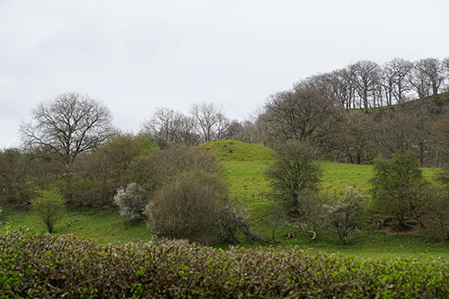
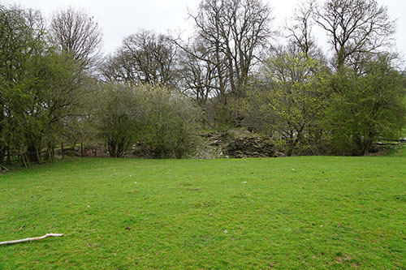
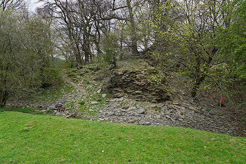
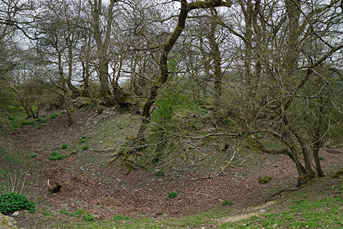
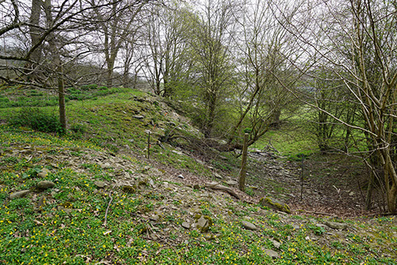
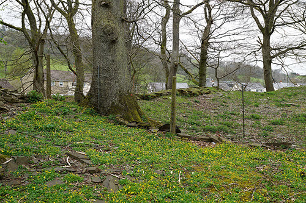
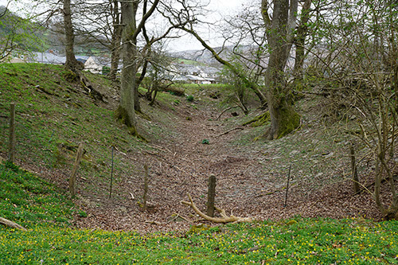
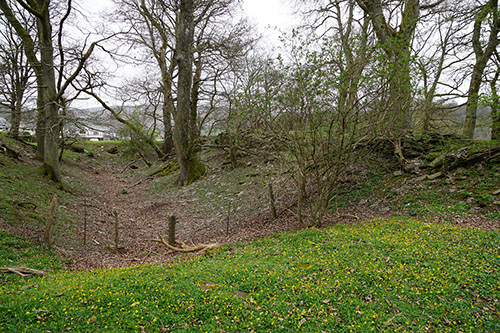
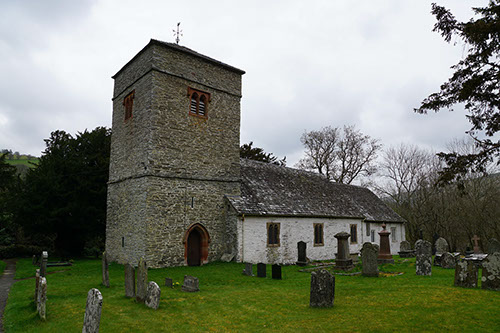
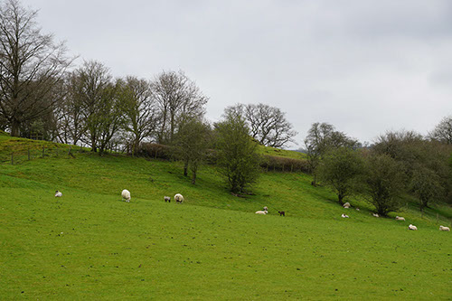
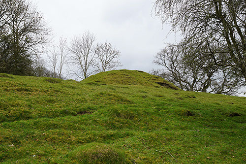
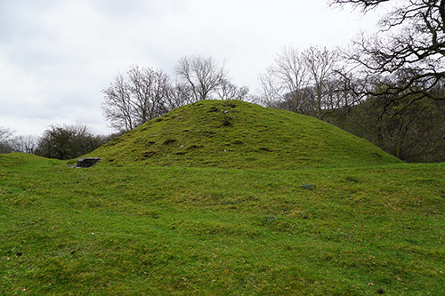
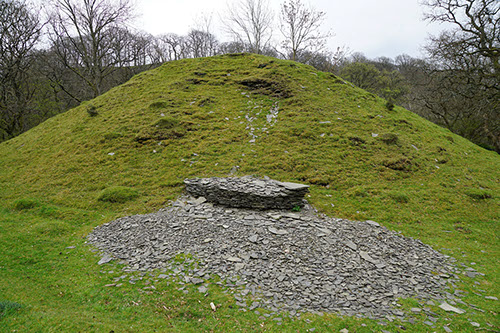
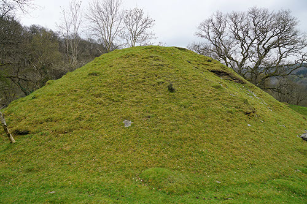
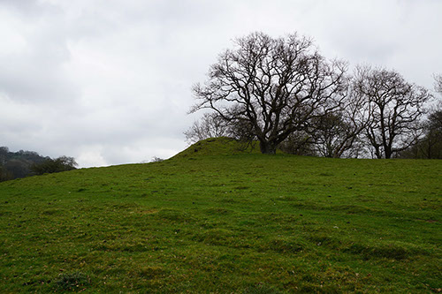